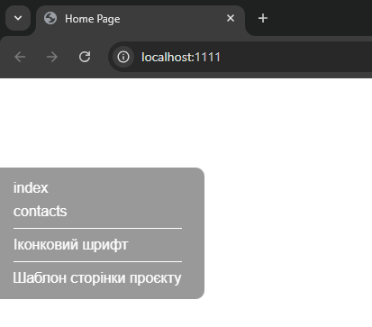

В збірці "Чертоги Фрілансера" 4 (далі ЧФ4) реалізована можливість використання навігаційної панелі розробника, скорочено НПР.
Навігаційна панель розробника (НПР) - це "плаваюче" меню яке в автоматичному режимі виводить наступну інформацію:
1. Посилання на усі сторінки проєкту. А саме усі HTML-файли які розміщені в корні папки src, для зручності навігації по проєкту.
2. При використання іконкового шрифту, посилання на сторінку з виводом усіх SVG-іконок та їх класів, для зручності їх копіювання. Посилання відкриється в новій вкладці
3. При використанні сторінки проєкту, посилання на шаблон сторінки проєкту для зручності її розробки. Посилання відкриється в новій вкладці
Увімкнути, або вимкнути НПР, в тому числі в режимі продакшн, можна в налаштуваннях ЧФ4. Крім того, є можливість налаштування положення та зовнішнього вигляду панелі:
navpanel - Налаштування навігаційної панелі
dev - У режимі розробника. Вмикач: true/false
build - У режимі продакшена. Вмикач: true/false
position - Позиція виводу панелі: left/right
color - Колір тексту та посилань
background - Колір фону
transition - Швидкість анімації відкриття у мілісекундах